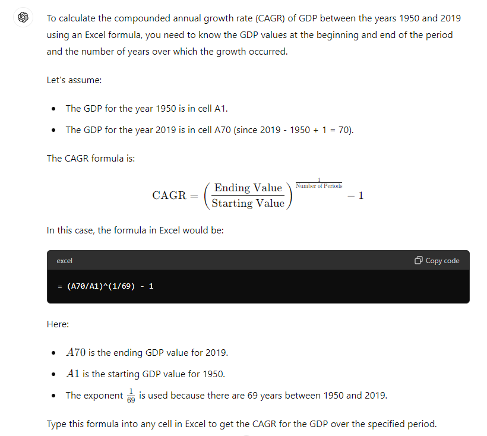
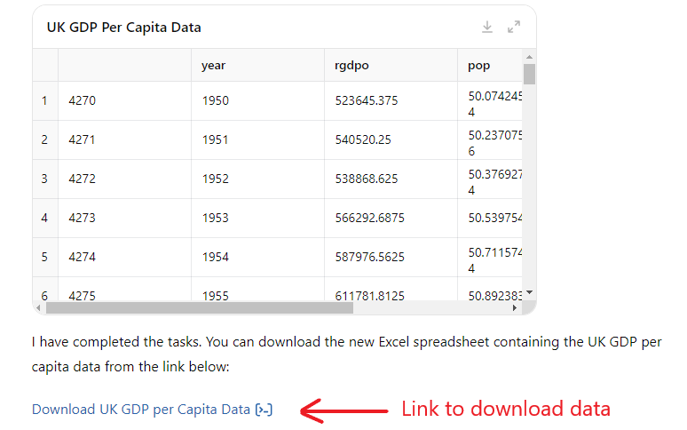
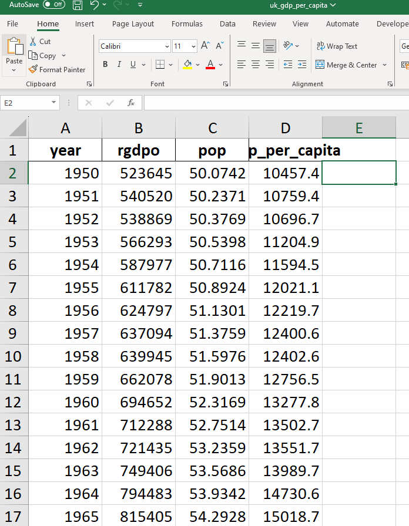

Chapter 7 Excel and Large language models
Many AI tools are already embedded into Excel. We have already used some of these features in previous chapters:
- When you create a new variable in a new column using a formula, Excel will use it as an example to write the formula in all subsequent rows in the same column and automatically update as the data changes (“Formula by Example”).
- When creating a chart, Excel proposes a selection of charts likely to be relevant in “Recommended charts”.
With the incorporation of Large Language Models (LLMs) such as Microsoft Copilot within Excel, the capabilities of generative AI tools in Excel is likely to increase. In this section, we explore what these new capabilities may look like. It is strongly recommended that you perform all calculations using Excel or other programming software rather than ask an LLM to generate output for you.
All output in this section have been generated using ChatGPT4. You may not be able to replicate this output using Copilot as it can only accept files of size up to 1MB.
7.1 Find an Excel formula
If you do not know how to write a formula in Excel, you may ask a LLM to suggest a formula.
Example: formula for the compound annual growth rate:
Prompt (ChatGPT 4): I have annual GDP data spanning the period 1950 to 2019 in an Excel spreadsheet. Write an Excel formula I can use to calculate the compounded annual growth rate of GDP between 1950 and 2019. Explain carefully the formula.
ChatGPT 4 offers the following reply:

Check:
- Is the formula correct?
- Can you use the formula in Excel to calculate the compound annual growth rate of UK GDP per capita?
- Be careful that the GPT may be “hallucinating” an Excel function.
7.2 Perform operations on data
Large language models can also be used to perform most of the tasks discussed in the previous sections.
Example: Extract UK data and create GDP per capita:
Prompt (ChatGPT 4o): (attaching pwt1001.xlsx) Using the PWT10.01 dataset attached, do the following tasks. 1) extract “year”, “rgdpo” and “pop” for entries where “country” is equal to “United Kingdom”. 2) create a new variables for UK GDP per capita using the variables extracted. 3) create a new Excel spreadsheet including the new variable, ready to be downloaded.
ChatGPT 4 generates:
Python code used to extract the relevant data and create the new variable.
Output: new Excel spreadsheet

Opening the new spreadsheet:

Check:
- Compare this spreadsheet with that created in Section 1.1.
- Check that the first entry for UK GDP per capita is correct.